|
Sent: 30 Nov 99 10:22 GMT web version, with
|
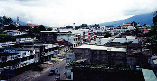
|
| Prior Trav-E-Log: Krabi Sumatra is Bukittinggi... | |
(Note:) This is the 11th in a series of Trav-E-Logs sent while traveling in S.E.Asia between Oct 16, 1999 and Jan 22, 2000.Hi folks,
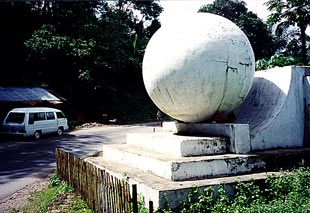Sorry for the long delay, but local connections are sparse, and expensive in the towns I have visited.
Sumatra has been a great place, with wonderful people. Upon arrival in Dumai (from Melaka, Malaysia), I hooked up with a Japanese & Italian traveling pair, and we headed to Bukittinggi, only stopping at Pekanbaru overnight to break the long journey. The dorm room here is very small, but the price is right -- $1. a night. And the staff and family have been fun to talk to, and have also been very helpful. The amazing thing is that people are so friendly, even when not trying to sell you something. Unlike many other places, the merchants seem to be more interested in greeting you than in trying to make a quick sale. And I haven't had to haggle over 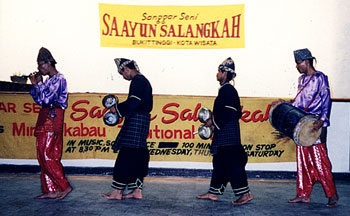prices, as even the locals say they pay the same prices for the items I am buying. What a pleasant difference from most other places. I hope I don't lose my touch.
The Lonely Planet Guide suggested a half-day walking tour of town that was a nice way to become familiar with Minangkabau attractions and culture. Unfortunately, the path across the suspended bridge requires that you travel through the zoo, which is in deplorable condition.
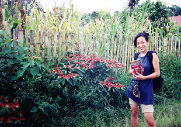The first evening I attended a traditional song, dance, and martial arts performance, and fell in love with the music. One of the reed instruments (serunai) sounded like the bombard(?) David Cantieni of Wild Asparagus plays, which I thought came from North Africa. Drums, gongs, flutes, and recorders were also used. All during the performance, I kept thinking of Ruth and Bob, and all the performers with Mixed Pickles. (Yeah, I still miss you!) After the performance, I went up to the master musician, Fendra Kasaef, and asked him if we could get together and try something with my fiddle. He suggested meeting there at 8 PM the next evening, and I agreed, but told him of my plans to go on a bus trip and that I would try, but no promises.
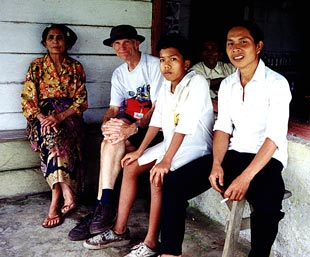The next day was a trip to Maninjau, a nearby mountain lake, where two of us trekked down to the lake from the mountain top. Altogether it was about 7 hours of walking, 4 of it going downhill in the jungle after a heavy rainstorm. Those in the know, realize what this means. Leaches everywhere, and if you stopped to empty them from your shoes, more would climb on you almost as fast as you could remove them. These were similar to the black leeches at the National Park in Malaysia, but with a color change to brown. The really bad part about trekking downhill after a rainstorm is that the path is unbelievably slippery, requiring you to watch every step you take, and so have less time to "smell the roses" and "see the forest". I stumbled three times, but my partner actually fell down. Couldn't believe we didn't have the suckers from head to toe after that episode. But the view 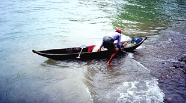was lovely, and it felt good to do that much hiking in one day. Upon reaching the lake, we stopped at a guesthouse overlooking the lake, had tea and a snack, used the facilities, and caught the next bus back to Bukittinggi. What a trip! Being a Sunday, many were out for the day, and we were the 70th or so riders on a 30-seater. Up to six of us were hanging on from our perch on the steps, outside the bus door! We managed to push our way into the bus during the next 3 miles or so, for the 2-hour trip back to town. Fortunately, we were inside when it decided to rain again, but some got off the bus, as it was just too cold hanging on. We stayed on the bus, and began to breathe easier once a few passengers started getting off.
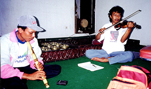Arrived home at 7 PM, just in time to bathe and rest a few moments before going back to the to the traditional song, and dance hall meeting place. Upon approaching the building, the sound of a guitar told me he was waiting. The next hour and a half were productive, figuring out the key to which the gongs (Talempong) were tuned, tuning my fiddle to F-C-G-D, and trying some simple tunes. Three of us continued the following evening as well, spending some time trying to play the gongs, and fiddle, rather successfully. Also purchased a 5-tone, 4-hole traditional instrument (serunai) from Fendra for his asking price of about $5. The instrument is 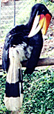made of Buffalo horn, and bamboo, with a reed that is almost swallowed when you play it. Really a wild sound! Fendra stressed that this is a playing quality instrument, not just a souvenir. He described the difference as being in the placement of the holes, and the ratio of hole position to diameter.
Well, next I want to head to Lake Toba, and meet with the Batak people, who are also very much into music and dance. Hope you all had a great Thanksgiving.
More pictures of West Sumatra below.
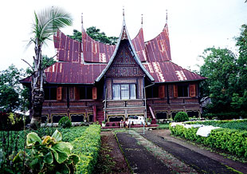
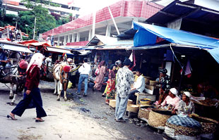
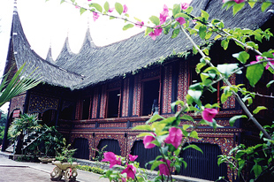
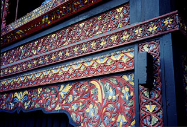
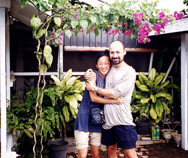
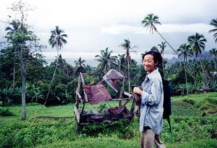
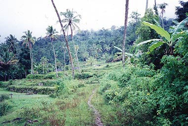
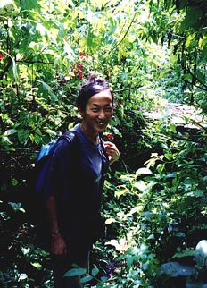
Bill